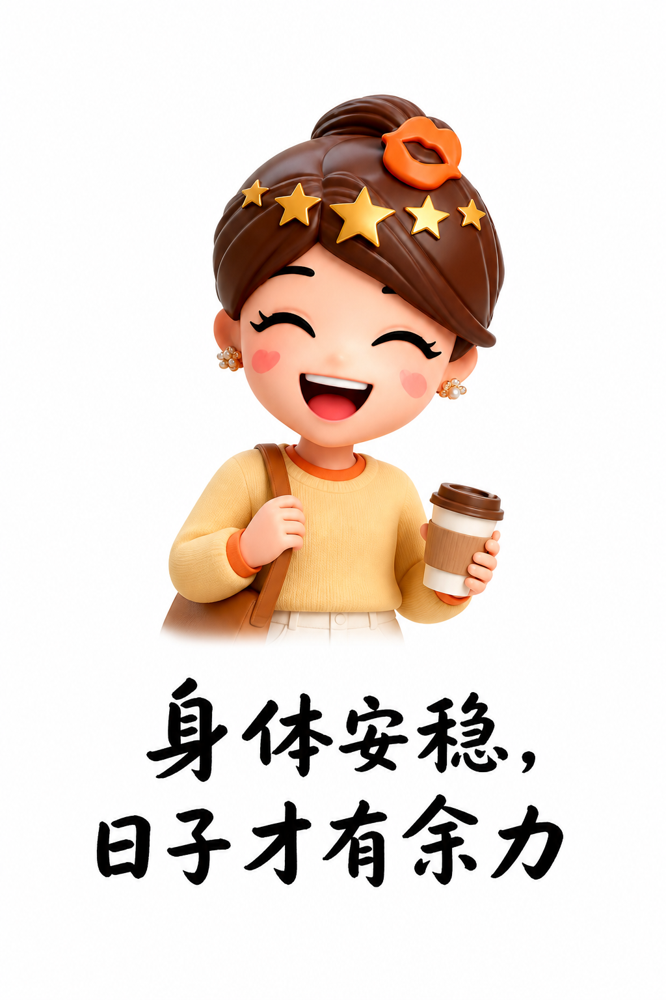
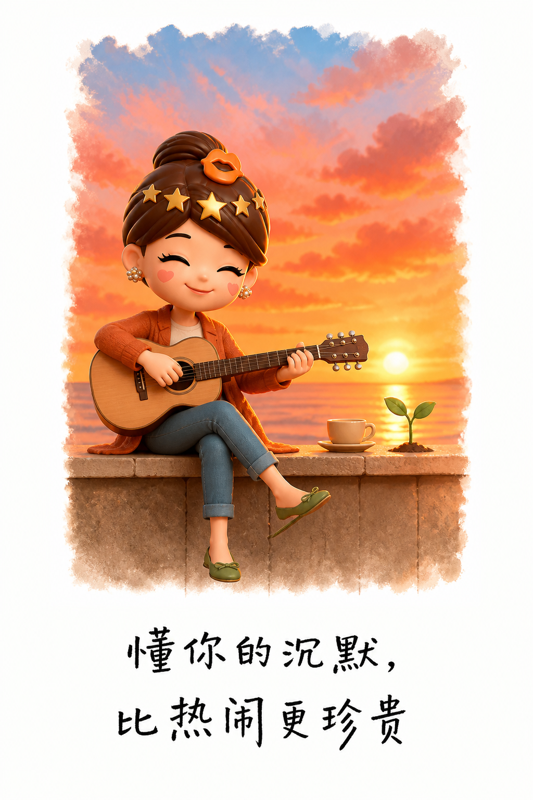
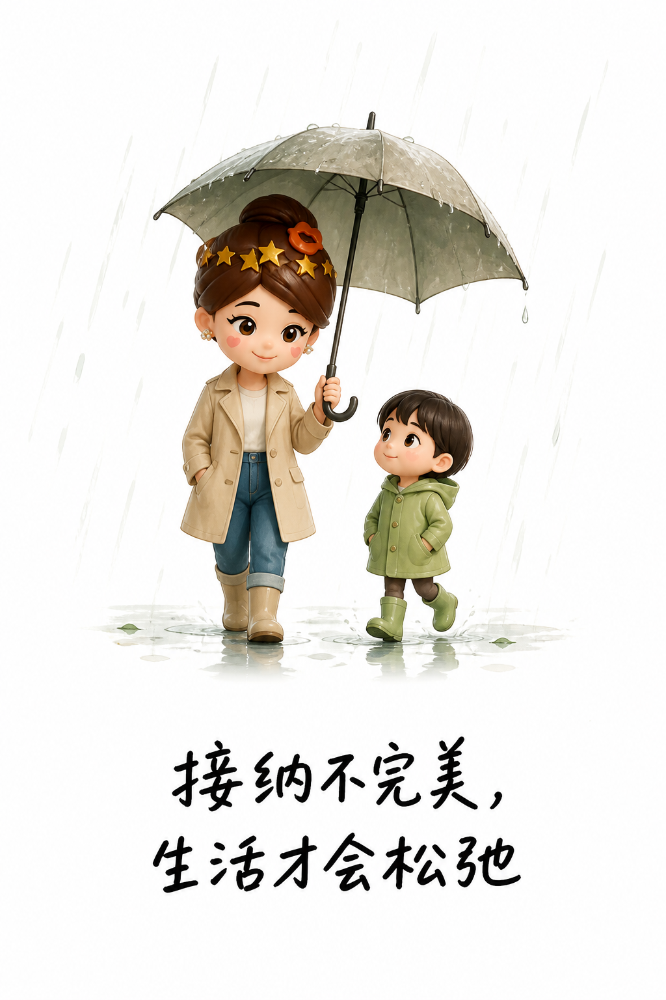

中年女人真正的底气，来自这四件事
人生过半，真正让人安心的，不是外界的赞美，而是身体、选择权、被理解和接纳自己的能力。
能照顾好生活，才有从容
健康不是一句提醒，而是每天能睡稳、吃香、行动自如。身体少一点疼痛，心里少一点牵挂，中年的日子才有余力安排。

存款的价值，也不只在消费。它让你面对不合适的关系和生活时，可以决定留下还是离开，不必用委屈交换安稳。
被理解，也学会理解自己
热闹与承诺会变化，真正稀缺的是有人读懂你的沉默，看见笑容背后的疲惫，并尊重你的边界。

更重要的是把这种理解还给自己：允许年龄留下痕迹，允许孩子慢慢成长，也允许偶尔脆弱。停止迎合所有人，生活才重新属于你。

中年最好的状态，是既能托住现实，也能放过自己。